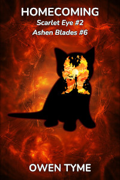

She Consumes Poison
Scarlet Eye: Homecoming is book six of Ashen Blades and book one of the sub-series Scarlet Eye, which centers on the adventures of a half-demon girl (Artemis Watson) and her friends in an ancient order of monster hunters (The Order of Ash and Smoke, also known as Ashen Blades).

The faithful companion of Artemis Watson, a kitten-shaped demon named Mashu’ra, was killed in the line of duty. He’s always lived in her hat and he’s like a brother to her, leaving her deeply upset and unable to calm down.However, there’s a slim ray of hope, which from another perspective becomes a ray of horror: the imp originally arrived on Earth through summoning magic and dying merely returned him to Hell. Unfortunately, nearly every demon in the place knows he’s a turncoat and the arch-nemesis of Artemis, Vogerath, has been waiting centuries for this to happen.
The Ashen Blades immediately tried a summoning spell to retrieve their friend, but another imp appeared in place of Mashu’ra, informing the kitten’s friends who has him. If they want him back, they’ll have to visit Hell and promise an unacceptable measure of cooperation that would surely doom the human race.
Meanwhile, Mashu’ra endures a nightmarish ordeal at the hands of his old boss, starting with magically-enhanced interrogation, then torture and brainwashing, using means both magical and mundane.
Artemis and her friends mount a desperate rescue mission and open a portal to that infernal world. Artemis leads the way, with military backup, using all of her power to cut a blood-soaked path through Hell, to reach the Outcast Detention Center, where Mashu’ra is held captive.
Will she be in time to rescue her dear friend before it’s too late? Will she manage to save his soul, or will she rescue only his body? Will Mashu’ra ever be the same again?
Release Schedule and Details
The first chapter was published to Royal Road on Friday, February 20, 2026 and further chapters will come one at a time, every Monday, Wednesday and Friday. The book will be complete on Friday, September 25th, 2026.
Looking For More?
There’s two options for what may be the next book in Ashen Blades:
She Hunts Witches will center around a small handful of demon witches with an ax to grind with the main characters.
On the other hand, She Hunts Gremlins centers around a plot involving demonic gremlins making their way into the internet, in a very amusing twist on their usual theme of invading Earth.
The order of these two novels has not yet been decided, since they haven’t been written, but She Hunts Gremlins is most likely next, to give the author time to find the means to research Japan, rather than changing the setting to either Chicago or possibly Los Angeles.